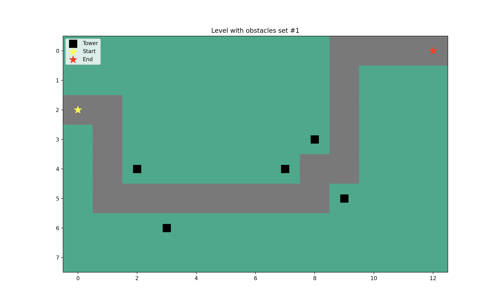
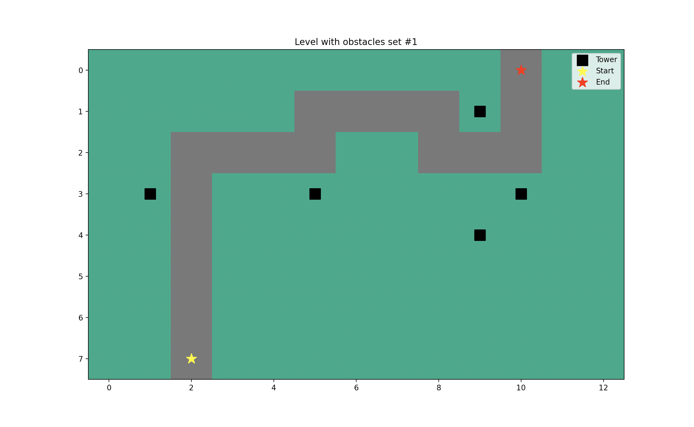
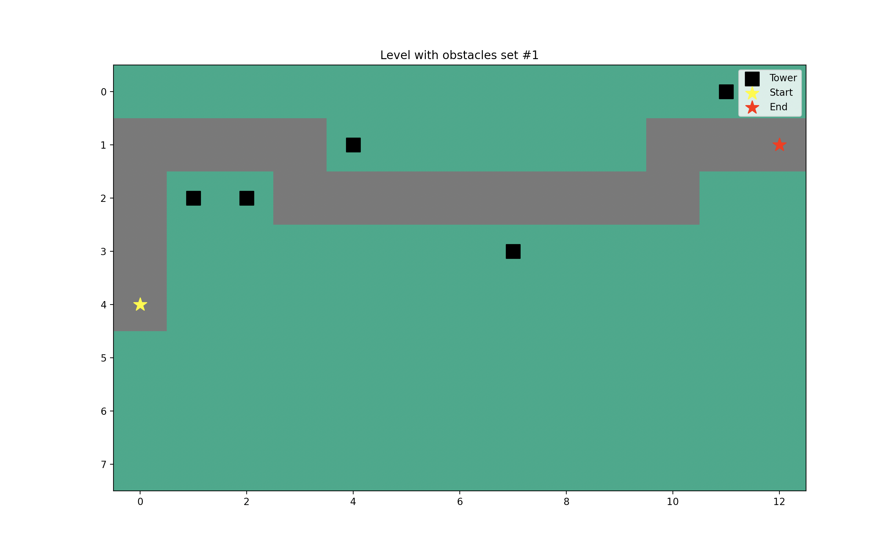
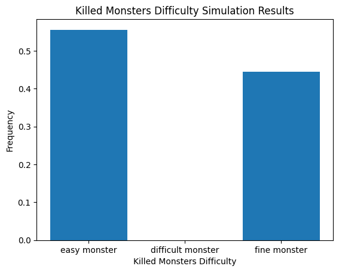
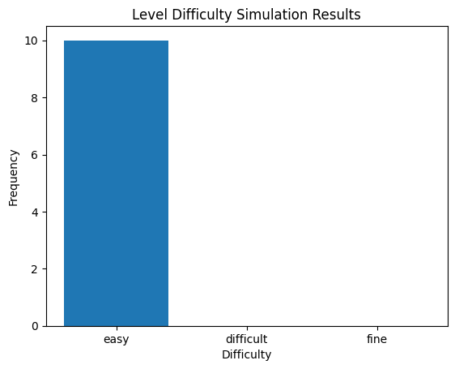
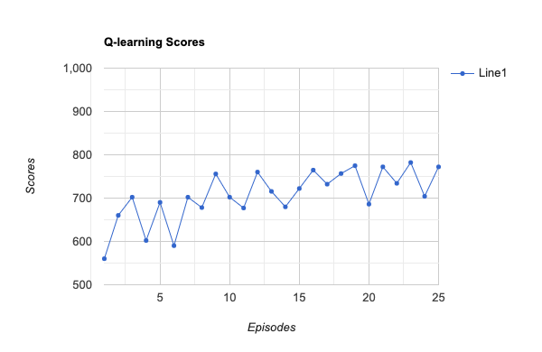

Automatic Level Generation and
Play Testing in Tower Defense Games
Abstract
In this paper, we propose a novel approach for the automated generation and testing of levels in the tower defense games. Our approach employs a comprehensive framework that divides the level generation process into three key components: path creation, tower placement, and zombie wave generation. By leveraging genetic algorithms and reinforcement learning techniques, we compare and combine the outcomes of these components to produce enhanced game levels. To evaluate the generated levels, we employ Q-learning, a widely recognized reinforcement learning technique. Through this evalu- ation, we aim to assess the quality of the levels and quantify the improvements achieved by our generation process. Ultimately, our method seeks to aid game level developers in enhancing their designs and facilitating the performance testing of each level.
Results
Genetic Algorithm Process
By running the genetic algorithm we have generated the following different maps in Fig 1, 2, and 3. The paths generated by the algorithm are complete from start to end with at least 1 curve. As we can observe the paths tend to occupy more area on the map and are longer. The towers’ locations generated are along the generated path.
Generated Map
  Q-learning Process (Training AI agent)
This part displays the performance of the Q-learning agent in testing and ensuring the playability of created maps closely resembles that of a human user. Fig 4 graph shows the analysis of the result of the monsters’ wave on the level 1 game map. Fig 5 graph shows the difficulty of the level 1 game map by running and updating an AI agent 10 times. Fig 6 exhibits the trends of players’ reward scores with the different episodes by AI agent simulation.
Monsters Wave Analysis Request
Difficulty Analysis Request
Q-learning Scores
Approach
Spurpunk’s game level generation and testing framework can be divided into two main parts: level generation and play testing. The entire framework is represented in the flow chart in Fig 7.
Framework of the proposed model of automated level generation
Framework of the proposed model of automated level generation.
Procedural Content Generation via Machine Learning (PCGML)
In this research, we investigated the application of a Q- learning agent to test the playability of a tower defense game. The results of our study demonstrated the promis- ing capabilities of the Q-learning algorithm in enhancing the decision-making process of the agent. However, it was observed that in certain iterations, towers were placed at lo- cations that were distant from the monsters. This suboptimal placement indicated the need for further improvements.